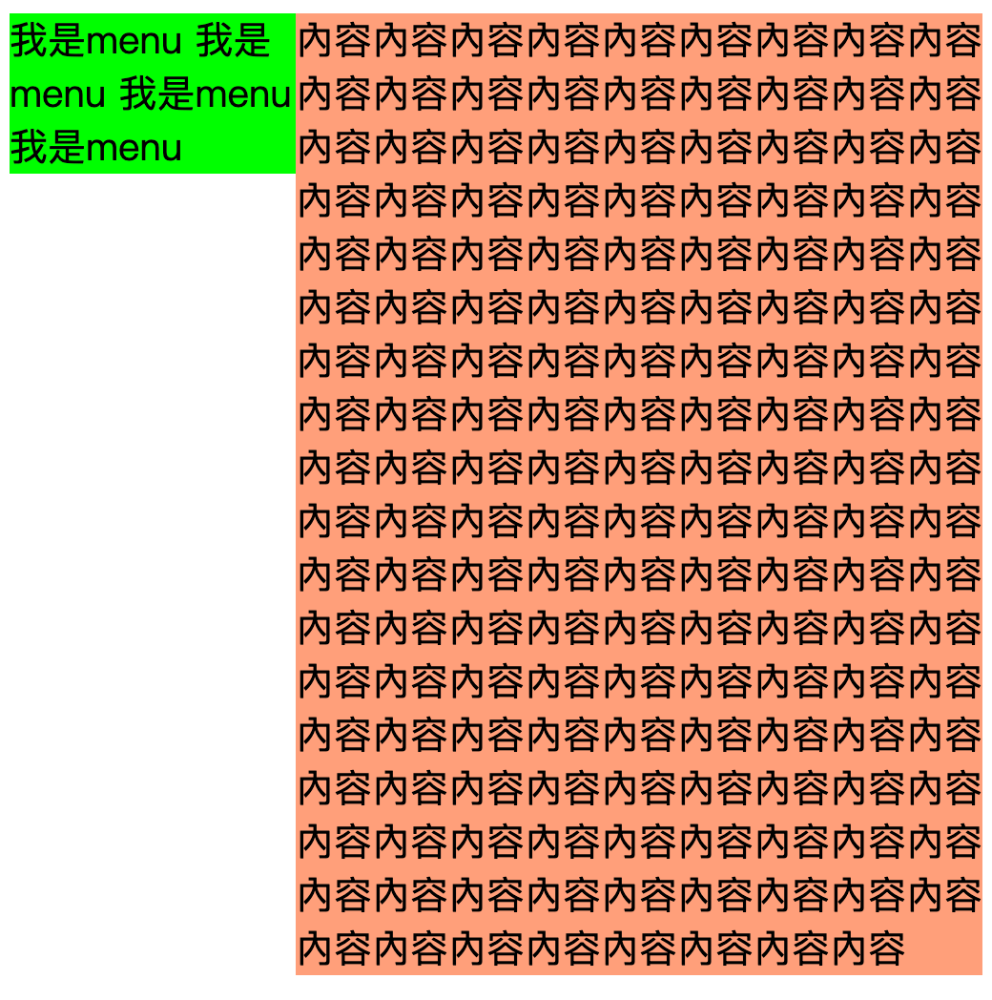
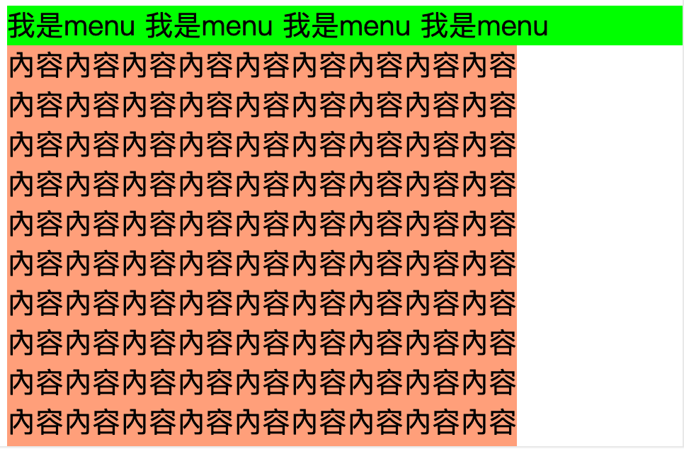

斷點規劃範例
- PC - 1200px
- iPad - 768px
- iPad以下 - 767px
- iphone 6 Plus - 414px
- iphone 6 - 375px
- iphone 5、SE - 320px
max-width 設計理念
通常會在最上層給 max-width 在子層使用%方式達到自適應延伸.
1
2
3
4
5
6
7
8
9
| .wrap {
max-width: 1200px;
.menu {
width: 35%;
}
.content {
width: 65%;
}
}
|
float版面基礎設計
簡單的左右區塊排版設計
1
2
3
4
5
6
7
8
9
10
11
12
13
| .wrap {
width: 600px;
}
.menu {
width: 25%;
background-color: LIME;
float: left;
}
.content {
width: 60%;
background-color: LIGHTSALMON;
margin-left: 150px;
}
|

rwd 左右區塊排版設計
1
2
3
4
5
6
7
8
9
| @media(max-width: 768px) {
.menu {
width: 100%;
float: none;
}
.content {
margin-left: 0;
}
}
|
